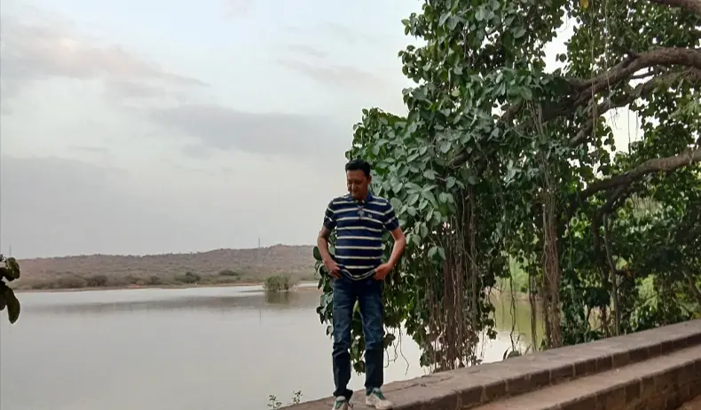

Wildlife
Chadva Rakhal
A remote seasonal wetland and grassland reserve sheltering rare wildlife including the Indian Wolf and striped hyena.
ExploreBeyond the famous White Rann lies a Kutch few ever see — remote wetlands, forgotten ruins, sacred grassland temples, and primal wildlife. Step off the trail.
A remote seasonal wetland and grassland reserve sheltering rare wildlife including the Indian Wolf and striped hyena.
ExploreA vast freshwater lake at the edge of the Rann — one of India's premier flamingo and migratory bird wintering grounds.
ExploreA little-visited Harappan-era settlement where pottery shards and structural remains lie barely disturbed in the open desert.
Explore Craft Village
Craft Village
The village of Khavda keeps alive a millennia-old pottery tradition, hand-crafting terracotta vessels with intricate geometric motifs.
ExploreA serene sun temple hidden in the Banni grasslands, dedicated to Surya and visited almost exclusively by local pastoral communities.
Explore Bird Sanctuary
Bird Sanctuary
A protected grassland sanctuary that is one of the last strongholds of the critically endangered Great Indian Bustard.
ExploreA little-known birding location where patient observers are rewarded with sightings of bustards, coursers, and larks.
Explore